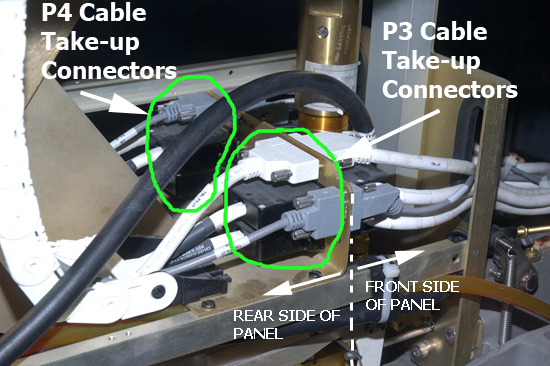
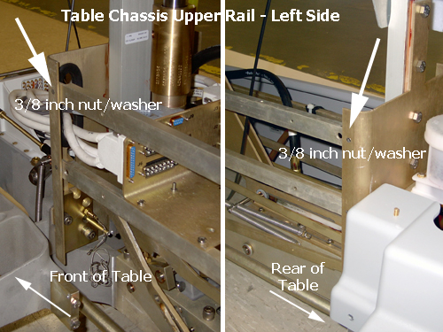

Illustration 10: Long Shaft Screwdriver

Illustration 8: Right Side View of Table Interface Panel Connectors

| NOTE: | Standing at rear of table, the right side is the P3 Cable Take-up, the left side is the P4 Cable Take-up. To make accessing the P4 connectors on the Table Interface Panel easier, remove the 3/8 inch nut and associated washer from front and rear of upper chassis rail. |
Illustration 9: Removing the Left Side Upper Chassis Rail

| NOTE: | Be careful with the J1/J2 and J4/J5 black connectors. They use small, standard head screws that are made of lightweight aluminum and can be easily stripped. |
Illustration 10: Long Shaft Screwdriver